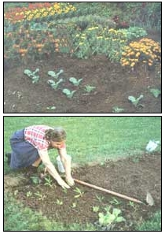
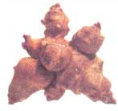
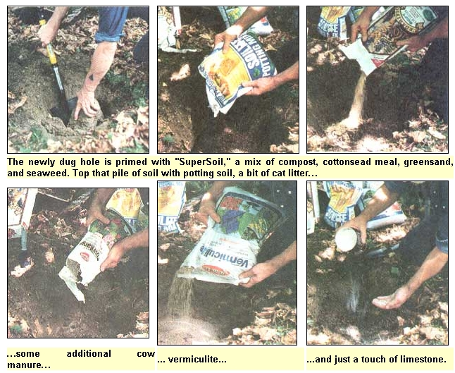
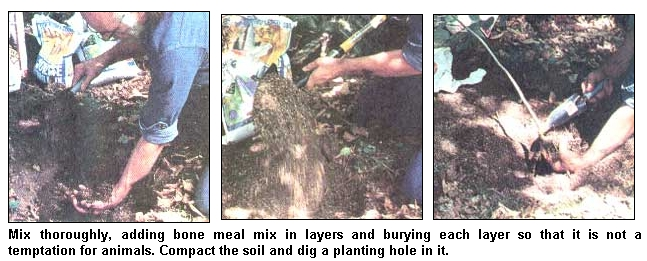
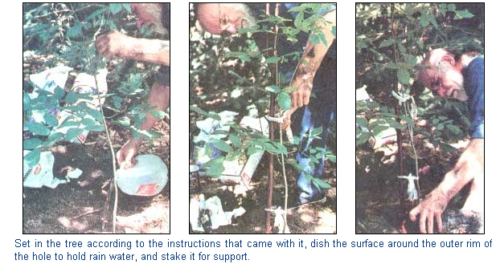
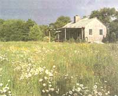
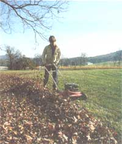

Fall Planting Guide For The Garden, Lawn And Orchard
Plant a fall garden to get a six-month jump on spring gardening chores.
By John Vivian
October/November 1995
Unless you’re a demon composter, the fall chores of raking leaves; grubbing out garden trash; gleaning mummies from the fruit trees; and dragging tomato stakes, cucumber trellis, and all to the barn can be downright depressing. It’s a requiem for the joyous season of life and growth, and a harbinger of the winter to come with leaden overcast, chill rain, sleet - and in the north country where I come from - snow. Lots of snow. Month after month of snow. I like to brighten the fall clean-up blues with a good dose of spring-of-the-year cheer by planting and seeding now for next year's garden bounty and lawn and flower beauty.
The Fall Garden
First-beginning as soon as the last crops are harvested-comes the vegetable garden.
I want to avoid disease buildup by not planting the same vegetables to a plot for two years running, or more often than every third year. For example, never following cabbage with broccoli or any other brassica, which would encourage a buildup of the club-root plant pathogen in the soil. Before I begin raking, composting, and tilling, I sketch a plan from memory (still fresh but likely to fade by next spring) of what varieties went where during the year's largely unplanned succession planting. During the year, we follow one crop with another to enjoy up to three harvests from each part of the garden-say, early radishes followed by bush beans followed by late chard or early lettuce. I hold the tomatoes up off the soil on stakes so that I can plant late (winter-keeping) beets or carrots under them.
With the memory of last year's crops refreshed, and keeping in mind that I'll soon be planting for next year, I can almost work up a little enthusiasm for cleaning up the garden trash, pulling the stakes still supporting dry bean and tomato vines (then burning them to kill off wilt spores and mosaic viruses-adding the ash to the compost), tilling in wilted plant residue, shredding and composting the old corn stalks and any picked-clean Brussels sprouts stems.
Once cleared, the garden gets a rough, once-through rototilling. Then I let it rest a while. Birds attracted to the fresh-turned soil will scratch around after exposed insects and weed seeds that had planned to over-winter in the soil. If we have rain followed by a few warm days, some weeds will germinate as well-but will be eliminated when I fine-till the surface again in a week. I continue with a fast, shallow tilling every week or two-each gleaned by birds-till the cold is settled in firmly enough that the animal's water bowls are rimmed with ice most mornings. I don't want my fall-planted seeds to think that spring has arrived, so they'll germinate-only to be killed with the onset of deep winter.
Indications will be different where you live, but it's time to do the fall planting on my place when a thin crystalline rind forms on the garden loam in the morning that makes a crunching sound as I walk over it. I prefer to do my fall planting early in the day while the garden surface is still crunchy, as the soil turns to slippery mud when it thaws.
Varieties For Fall Planting
First I round up half-used seed packets where I've absentmindedly left them on window sills in the barn, under the bench in the tool shed, and in odd jars and boxes in the pantry. I winnow out seeds of the subtropical nightshades: tomato and eggplant; the cucurbits including squash, melons and cucumbers; plus corn, beans, and other warmth-loving plants. Planted into winter-dry soil, such seeds might winter over all right (otherwise, how would we get one or two "volunteer" tomato or squash plants in the compost every year?). However, all but a very few lucky or super-hardy seeds would rot, fail to germinate, or die from damping-off fungus in the wet, chilly spring soil.
|
 WALTER CHANDOHA Plant a fall garden for delicious late-season harvests. |
 JERRY HOWARD/POSITIVE IMAGES fall onions |
 WALTER CHANDOHA fall tubers |
|
 preparing a fall garden bed |
 preparing a fall garden bed |
 fall landscaping |
|
 fall scenery |
 fall gardening preparation |
|